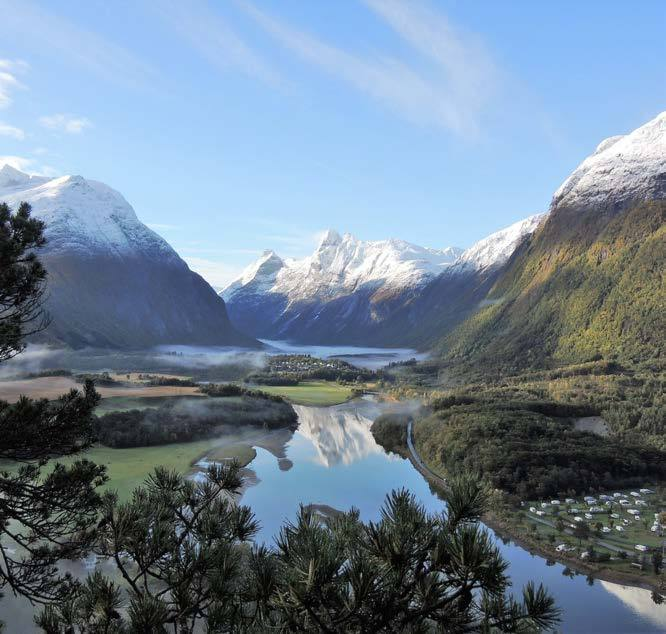

2026年7月2日（星期四）
Oslo → Geiranger 沿途 8 個打卡位
每個位：幾點 · 喺邊 · 影咩 · 吹咩水。開一次就離線照用。
領航睇 🧭 領航tab，呢頁負責型。
07:35前 銅老虎
~08:40 大湖
11:58 Dombås
12:08起 Rauma線
14:00 纜車頂
~18:00 Trollstigen
~18:50 Ex Machina
~19:45 老鷹路
官方相：Oslo S 正門廣場 — 銅老虎就喺呢個廣場度
07:35 前行程位置：出發前 · Oslo S 正門廣場
🐯 Oslo 銅老虎
車站正門廣場（Jernbanetorget）有隻 4.5 米長嘅銅老虎，全 Oslo 最出名嘅打卡點之一，摸佢個頭影相係指定動作。
⏰ 觸發訊號：大屏幕出咗月台號碼、人已經識得點行去月台 → 先准打卡。注意：唔好行出廣場範圍，07:35 一到即撤。💬 吹水位
- Oslo 花名叫「老虎城 Tigerstaden」— 出自 19 世紀詩人 Bjørnson 首詩，形容呢個城市又危險又迷人。
- 隻虎係 2000 年 Oslo 建城 1000 週年時擺喺度。
⚠️ 先搞掂正經事：喺大屏幕見到「07:50 Trondheim」嘅月台號、行到月台之後，有突先好返嚟影。趕唔切就算 — 呢隻虎唔會走。
~08:40–09:50行程位置：火車①上 · 左邊窗
🌊 Mjøsa 大湖（車窗打卡）
開車後大約一個鐘，火車沿住挪威最大湖 Mjøsa 嘅湖邊行成段路 — 坐左邊嘅望出窗，湖面平到似鏡。
⏰ 觸發訊號：窗外開始出現大片水面（約 08:40）＝影相窗口開始，維持大概一個鐘。注意：鏡頭貼實玻璃防反光；靚位一閃即逝，見到就影唔好等。💬 吹水位
- Mjøsa 面積 365 平方公里 — 大過四個香港島。
- 湖上有隻 1856 年落水嘅明輪船 Skibladner，係全世界最老、仲照常載客嘅明輪蒸汽船，170 歲。
📷 玻璃反光：手機鏡頭貼實車窗影，就冇倒影。
官方相：Dombås 月台 — 你嘅紅色火車②就喺呢度
11:58–12:08行程位置：轉車站 · 得10分鐘‼️
🏔 Dombås 高原快閃
海拔約 660 米嘅高原小站，空氣凍過 Oslo 幾度。同紅色小火車＋雪山背景合照，係經典 Rauma 線開場照。
⏰ 觸發訊號：11:40 鬧鐘響＝執嘢著褸；落車後先上火車②霸位，後影相。注意：高原月台風大，凍；相企喺車門一步之內影。💬 吹水位
- 呢度隔籬嘅 Dovrefjell 山區有全歐洲唯一嘅野生麝香牛（musk ox）群 — 1930 年代由格陵蘭運返嚟，冰河時期活到而家嘅物種。
- 挪威人講「Til Dovre faller!」（直到 Dovre 山倒下）＝「海枯石爛」，1814 年挪威立憲時嘅誓言。
⚠️ 轉車大過天：先上咗火車②霸好位，影相企喺車門邊或者隔窗影。唔好為張相搞到成團人甩車。

官方相：Romsdalen 山谷 — 火車②window seat 就係呢種景
12:08→13:30行程位置：火車②全程 · 坐左邊
🚂 Rauma 線：石橋＋大石壁
成條線都係打卡位，兩個高潮位車會自動慢駛＋廣播：① Kylling 石橋 — 百年石拱橋，橋底 Rauma 河綠到唔真實；② Trollveggen「精靈之牆」— 成幅 1000 米直上直落嘅石壁喺左邊窗逼埋嚟。
⏰ 三個觸發訊號：① 上車即刻坐左邊（呢個決定而家做）；② 停完 Bjorli 站（約12:55）＝精華段開始，全員唔准瞓；③ 車速突然慢落嚟／廣播響＝Kylling橋或Trollveggen到，攞手機。注意：慢駛位人人擠去左窗，早一分鐘企定卡位。💬 吹水位
- Rauma 線經常被選做歐洲最靚火車線之一 — 而我哋張飛係包埋喺套票入面。
- Trollveggen 係歐洲最高嘅垂直崖壁，玩跳崖（BASE jump）死得人多，1986 年起立法禁跳。
- 官方小冊子話：Romsdalen 一帶做過 Harry Potter 同 Mission: Impossible 嘅取景地。
📷 聽到廣播先攞手機都得，唔使成程舉住。慢駛位人人企左邊 — 早少少企定卡位。
官方相：Åndalsnes 站前廣場 — 對面就係纜車站
14:00–15:30行程位置：Åndalsnes · 車站對面上纜車
🚡 Nesaksla 山頂（708米）
全挪威最新式嘅纜車之一（2021 年開幕），10 分鐘由海邊拉上 708 米山頂，成個 Romsdalsfjord＋群山 360° 攤喺腳下。山頂 Eggen 餐廳嘅落地玻璃位係頭號打卡座。
⏰ 觸發訊號：踏出山頂纜車嗰一步 → 即刻 set 15:30 鬧鐘，先至開始玩。想去 Rampestreken 伸出崖外嗰條橋＝一上到頂即去（要行落斜一段）。注意：山頂比山腳凍好多兼大風，褸跟身；影崖邊相企穩先舉機。💬 吹水位
- 山頂行落少少有個 Rampestreken 觀景台 — 條鋼橋伸出崖外，企上去張相似浮喺半空。
- Åndalsnes 外號「挪威登山之都」— 我哋用 10 分鐘搭纜車完成人哋行 3 個鐘嘅路。
⚠️ 15:30 鬧鐘＝落山，冇得拗。Rampestreken 要行一段落斜路先到 — 想去就即上山即去，唔好留到尾。
官方相：Trollstigen 觀景台望落 11 個髮夾彎
~18:00 · 停35分鐘行程位置：巴士第一個影相位
🌀 Trollstigen 精靈之路
全挪威最出名嘅山路：11 個髮夾彎掛喺山壁上。觀景台條路伸出去，最大嗰個平台凌空喺馬路上面 200 米 — 就係張經典相嘅拍攝位。
⏰ 觸發訊號：司機宣佈停車嗰一刻＝①影巴士＋車牌 ②set 鬧鐘（集合時間早5分鐘）— 做完先落車。注意：35分鐘唔夠行晒所有平台，揀一個就夠；石面濕滑慢行；驚高行低嗰層平台一樣靚。💬 吹水位
- 1936 年開通，國王 Haakon 七世親自剪綵；起咗成 8 年，好多路段係人手鑿出嚟。
- Trollstigen＝「精靈嘅梯級」；冬天成條路封閉，得夏天先行到 — 所以今日呢程係季節限定。
- 驚高唔使上大平台 — 官方講明有幾個唔同高度嘅觀景點，任揀。
⚠️ 返車三步曲：落車影低巴士＋車牌 → 司機講集合時間即刻 set 鬧鐘（早5分鐘）→ 響咗就返。呢度有café、廁所、手信舖，35分鐘一眨眼就冇。天氣差改停老鷹彎＝正常安排。
官方相：Gudbrandsjuvet 峽谷觀景橋
~18:50 · 停10分鐘行程位置：巴士第二個影相位
🎬 Gudbrandsjuvet（Ex Machina 拍攝地）
Valldøla 河幾千年鑿出嚟嘅深谷，觀景橋好似花環咁繞住個峽谷起。企喺橋上望落去，水流喺石罅入面打晒圈。
⏰ 觸發訊號：Trollstigen 開返車之後大約半個鐘、司機再宣佈停車＝就係呢度。一樣三步曲（影巴士→set鬧鐘→先落車）。注意：得10分鐘：落車直行去橋，影完即回，唔好行入其他小徑；橋面同欄杆邊濕滑。💬 吹水位
- 官方小冊子原話：睇過電影 Ex Machina 就會認得呢度 — 套戲大部分場景就喺呢一帶影。AI 電影朝聖位，同 AI 整嘅旅遊頁嚟打卡，圓滿。
- 啲觀景平台係挪威「國家景觀路線」計劃搵則師專登設計 — 連個廁所都攞過建築獎級數。
⚠️ 得 10 分鐘：落車直行去橋 → 影 → 返。一樣三步曲。

官方相：由上面望落 Geirangerfjord — 落山嗰段就係呢個角度
~19:45 → 20:15行程位置：巴士落山入 Geiranger＋黃昏碼頭
🦅 老鷹之路落山 ＋ Geiranger 黃昏
最後一段落山路叫 Ørnevegen「老鷹之路」— 11 個彎位一路兜落海邊，成個 Geirangerfjord 喺車頭玻璃度展開。落車之後，黃昏碼頭＋U 型峽灣就係今日壓軸打卡位。
⏰ 觸發訊號：巴士開始連續急彎落山（約19:45之後）＝老鷹之路，坐定定攞定手機，第一次見到成條峽灣通常喺頭幾個彎。注意：彎位企起身會跌，隔窗影就夠；影唔切唔使懊惱 — 今晚同聽日成條峽灣任你影。💬 吹水位
- Geirangerfjord 係 UNESCO 世界遺產（2005年）— 挪威成千條峽灣，得兩條攞到呢個銜頭。
- 條村常住人口得二百幾人，但一年幾十萬遊客 — 而我哋今晚係喺度過夜嘅少數，郵輪客晚晚走晒，成條峽灣得返我哋。
- 而家係7月，夜晚11點先天黑 — 唔使同夕陽鬥快。
💡 巴士落山時坐定定隔窗影就得（彎多，企起身會跌）。到埗放低行李，夜晚 21–22 點光線最靚，行返出碼頭慢慢影。
🤫 冷門位（識玩先知，人少景靚）
🚂 火車②開出後 20–35 分鐘 · Lesjaskogsvatnet 湖
- 兩邊窗都見到嘅長湖，水平如鏡 — 但真正巴閉喺個湖係全世界少有嘅「雙出口湖」：同一個湖，東邊流出 Gudbrandsdalen，西邊流出 Rauma 河（即係你哋跟住成程嘅嗰條河，源頭就喺度）。
- 吹水句：「呢個湖決定唔到自己流去邊個海，索性兩邊都流。」
🚉 ~12:55 · Bjorli 站（唔使落車）
- 舊水塔＋火車轉盤仲喺月台邊 — 蒸汽火車年代遺物。過咗 Bjorli，先至係 Rauma 線最誇張嘅落山段：之後半個鐘先係正戲，唔好喺呢度前瞓着。
🚌 Trollstigen 落山段 · Stigfossen 瀑布橋位
- 人人喺上面觀景台影髮夾彎，少人為意巴士會喺 Stigfossen（320米瀑布）腳下過石橋 — 過橋嗰幾秒，成條瀑布喺車窗邊瀉落嚟。⏰訊號：巴士落完最尾嗰個髮夾彎、聽到轟轟水聲＝就嚟過橋。
⛪ Geiranger 白色小教堂（黃昏加碼位）
- 村口山腰嘅八角形白色木教堂（1842年），行上去10分鐘左右 — 郵輪客黃昏走晒，長凳望住成條峽灣，係村內最靜嘅視角。⏰訊號：21:00後人最少、光線最金。
🏆 遊客口碑三甲（俾你哋做參照）
- 評論區公認最正三個景：Flydalsjuvet 崖位（今晚行得到，睇「今晚加碼頁」）、Ørnesvingen 老鷹彎（巴士今日經）、Dalsnibba Skywalk（1500米，要車上去）。